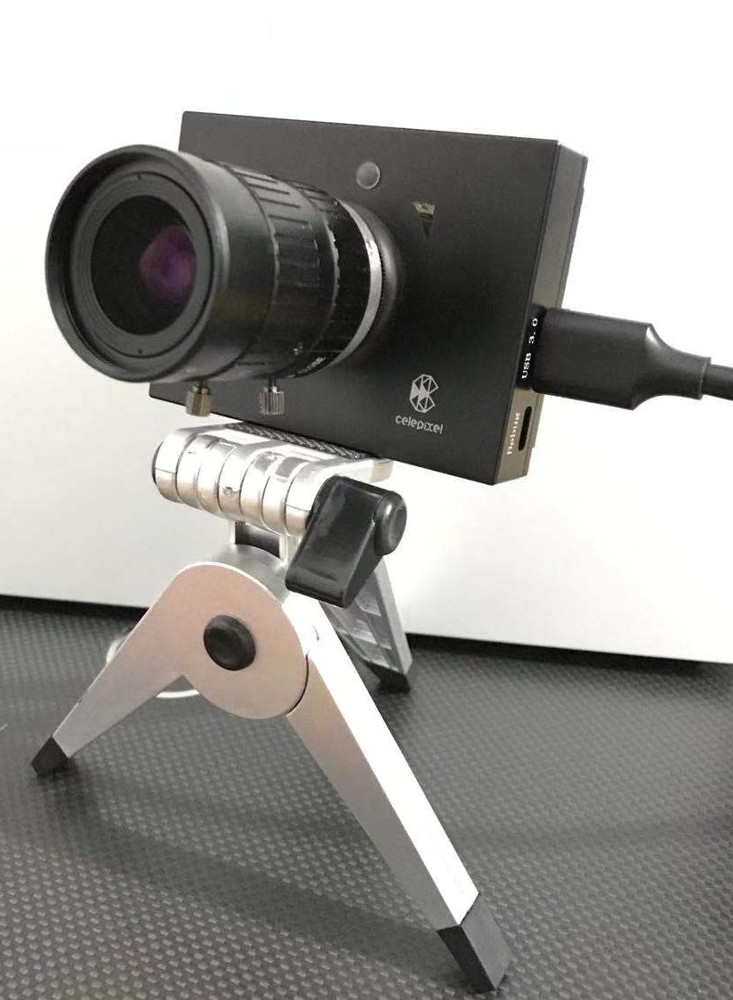

我在前段时间为 CeleX5-MIPI 系列相机开发了一套完善的 ROS 下的驱动。CeleX5-MIPI是一款国产的事件相机，具有1280x800的分辨率。项目已开源在：https://github.com/kehanXue/CeleX5-ROS 。
！本篇是项目在 Github 的中文版 README.md，所以本文中的链接是相对链接，这将导致它们在本文中不可用。请移步项目的地址，非常感谢！
CeleX5-ROS
The ROS packages for CeleX™ CeleX5-MIPI Dynamic Vision Sensor.
本仓库提供了CeleX5-MIPI相机在ROS下多个功能包和示例，包括有：
celex5_ros：提供了CeleX5-MIPI相机的ROS下的较为完善驱动。celex5_msgs：为CeleX5-MIPI相机定制的ROS消息类型。celex5_calibration：提供了有关于celex5_calibration基于Events数据进行标定相关的工具和教程。
本仓库代码主要遵从Google C++ 编程风格
介绍

CeleX™ 是针对机器视觉而设计的智能图像传感器系列。传感器中的每一像素点能够独立自主地监测相对光强的变化，并在到达阈值时被激发发出被读出信号。行和列仲裁电路实时处理像素激发信号，并确保即使同时接收到多个请求时能够按有序的方式逐一处理。传感器依据被激发的事件，输出连续的异步数据流,而不是图像帧。CeleX™ 传感器监测的运动物体速度不再受传统的曝光时间和帧速率限制。它可以侦测高达万帧/秒昂贵高速相机才能获取到的高速物体运动信息，而且还能大幅降低后端处理量。
CeleX-5 是一款多功能智能图像传感器，具有一百万像素（分辨率为：1280*800）和片上集成的一些附加功能（如光流）。传感器支持几种不同的输出格式:纯二进制地址事件,具有像素强度信息或定时信息的地址事件。此外,传感器的读出方案可以是异步数据流或同步全帧。输出格式和读出方案的不同组合使该传感器具有很大的灵活性,总共支持 6 种独立的操作模式（但是其中有一种未在sdk中提供相应接口）。为了进一步满足不同应用的要求,传感器还可以配置为 Loop 模式,可以在三种不同模式之间自动切换。
ROS是目前很主流的实验平台，提供了丰富的开发接口和资源。但在CeleX™官方开源仓库中，关于ROS下的示例非常的不完善：
官方的SDK版本已经更新到了v2.0版本，然而其ROS-Sample支持的版本仍停留在v1.6版本。
官方的ROS-Sample仅为一个简单的示例，只输出一个工作模式下的一种图像，未提供全面且方便的调参功能和界面。
因此，为了更为方便的利用ROS提供的资源，我开发了这个仓库中的内容。
概要
本仓库提供了CeleX5-MIPI相机在ROS下多个功能包和示例，包括有：
celex5_ros：提供了CeleX5-MIPI相机的ROS下的较为完善驱动，可根据用户需求自由配置输出多路数据（原始Event数据、IMU数据、灰度帧、光流信息等），并提供了rqt_reconfigure调参面板以支持动态调参。更多细节。
目前仅仅在CeleX5-MIPI设备上测试通过，由于手里没有CeleX5系列的其他产品所以无法测试。
celex5_msgs：为CeleX5-MIPI相机定制的ROS消息类型。celex5_calibration：提供了有关于celex5_calibration基于Events数据进行标定相关的工具和教程，包括标定板生成（目前仅支持闪烁的棋盘格，其他类型待加入）、内参标定、与传统相机进行外参标定（使用Kalibr）、同步收集与定制发布标定所需的图像数据、与传统相机进行时间戳对齐（TODO，目前存在问题）等工具。更多细节
建议在使用前，请首先认真阅读CeleX官方提供的快速入门手册和API文档的概念部分，对基本名词术语有大概认识。
编译与运行
编译
mkdir -p ~/celex_ws/src cd ~/celex_ws/src git clone git@github.com:kehanXue/CeleX5-ROS.git git submodule update --init --recursive # Or with http: `git clone https://github.com/kehanXue/CeleX5-ROS.git` cd .. rosdep install -y --from-paths src --ignore-src --rosdistro $ROS_DISTRO catkin_make # Or use `catkin build`如果过程中报少哪些依赖库的错误，安装即可。
运行
celex5_ros更多细节首先将相机连接到电脑上。
source ~/celex_ws/devel/setup.bash # Or source setup.zsh when you use zsh roslaunch celex5_ros celex5_ros_node.launch # In a new Terminal rosrun rqt_reconfigure rqt_reconfigure # Open rqt_reconfigure to config无报错即正常运行。使用
rostopic list即可看到发布的话题，使用rivz或者image_view订阅相对应图像话题即可看到发布的图像。某图像话题中是否发布数据由参数配置、上表的相机工作模式所共同决定。$ rostopic list /celex5_mipi/display/accumulated_img/camera_info /celex5_mipi/display/accumulated_img/raw_image /celex5_mipi/display/binary_img/camera_info /celex5_mipi/display/binary_img/raw_image /celex5_mipi/display/count_img/camera_info /celex5_mipi/display/count_img/raw_image /celex5_mipi/display/denoised_binary_img/camera_info /celex5_mipi/display/denoised_binary_img/raw_image /celex5_mipi/display/full_frame_img/camera_info /celex5_mipi/display/full_frame_img/raw_image /celex5_mipi/display/gray_img/camera_info /celex5_mipi/display/gray_img/raw_image /celex5_mipi/display/in_pixel_img/camera_info /celex5_mipi/display/in_pixel_img/raw_image /celex5_mipi/display/optical_flow_direction_img/camera_info /celex5_mipi/display/optical_flow_direction_img/raw_image /celex5_mipi/display/optical_flow_img/camera_info /celex5_mipi/display/optical_flow_img/raw_image /celex5_mipi/display/optical_flow_speed_img/camera_info /celex5_mipi/display/optical_flow_speed_img/raw_image /celex5_mipi/display/parameter_descriptions /celex5_mipi/display/parameter_updates /celex5_mipi/display/superimposed_img/camera_info /celex5_mipi/display/superimposed_img/raw_image /celex5_mipi/events /celex5_mipi/imu_data /celex5_mipi/polarity_img/camera_info /celex5_mipi/polarity_img/raw_image /celex5_mipi/sensor/parameter_descriptions /celex5_mipi/sensor/parameter_updates /rosout /rosout_agg其中原始event数据的话题：
/celex5_mipi/eventsimu数据的话题（注意由于CeleX5原始imu数据获取的方式，导致imu话题与ROS中标准的IMU话题的消息类型不同）：
/celex5_mipi/imu_data通过
image_view查看某一图像：rosrun image_view image_view image:=/celex5_mipi/display/binary_img/raw_image
使用
celex5_calibration更多细节：链接
提供了一系列基于Events数据进行相机参数标定的办法。
标定工具的生成
运行：
rosrun celex5_ros pattern_generator_node # In a new Terminal rosrun rqt_reconfigure rqt_reconfigure # Open rqt_reconfigure to config更多细节：链接
基于ROS中的camera_calibration工具包进行的内参标定。（如果要标定与其他相机的外参，ROS中的这个工具仅支持分辨率一样的…）
安装：
sudo apt install ros-$ROS_DISTRO-camera-calibrationCeleX5-MIPI进行基于该方法进行标定的具体过程：链接
基于Kalibr的标定，支持同时进行内参、与传统相机的外参标定。基于Event数据。
更多细节：链接
同时提供了收集标定数据的一系列工具。
与其他相机进行时间戳的标定。
TODO，目前仍存在问题。链接
仍存在问题
celex5_ros
- 实现的Nodelet接口仍存在问题（不过ros node版本是完全正常工作的）。在通过nodelet加载相机的参数文件的过程中，解析xml文件会出现乱码。调了好久都没找到问题，如果大家提供解决建议的话我会非常感谢。
- 关于文档中的
Multi_Read_Optical_Flow_Mode模式，未在SDK中找到相关接口。// TODO - 暂未添加生成FPN的功能，请仍使用CeleX官方提供的GUI Demo进行FPN的生成（其Linux下的Demo运行可能会直接报段错误，Windows下的较为稳定一些）。
- 暂未提供CeleX SDK里的有关录制bin文件的功能，但ROS下我们可以使用ROS bag来进行录制。
celex5_calibration
- 关于与其他相机进行时间戳标定的相关功能还未完成。